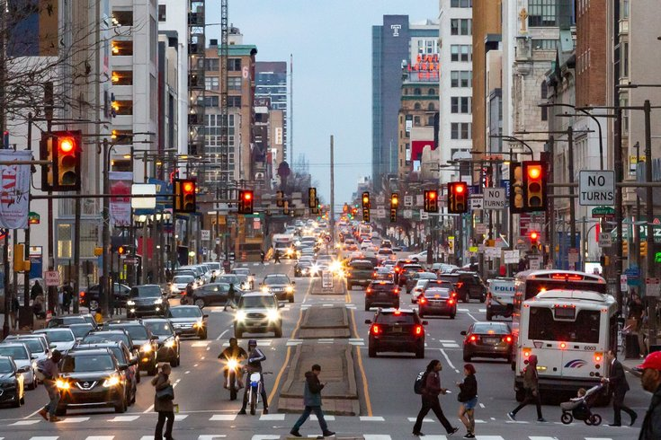

Why should you care about biking?
scroll downTraffic
If every bike commuter were to drive a car to work, there would be a substantial increase in traffic, especially in Center City and South Philadelphia, where cyclists make up 5.7% and 6.3% of commuters respectively. Cyclists also do not have to deal with car traffic as frequently as cars due to bike lanes, meaning in dense urban environments, bike commutes take the same time and sometimes even less time than car commutes.
Access

22.7% of Philadelphians, the majority of whom are people of color, live below the poverty line. This means that they cannot afford a car and must rely on another form of transportation to make ends meet. The cost of a car also adds up substantially over time, with drivers having to pay for gas, parking, maintenance, and insurance. In contrast, a bicycle is a one-time payment, making it far more accessible to disadvantaged people.
Health
Cycling burns calories, builds muscle, and improves cardiovascular health. An hour of cycling at a steady pace burns around 300 calories, and a half an hour of cycling every day for a year burns around 11 pounds of fat. Cycling engages most of the major muscle groups in your legs, including your glutes, hamstrings. and quadriceps. Cycling also works your heart muscles, which reduces your risk of cardiovascular diseases such as high blood pressure, strokes, and heart attacks.
Lana Harshaw, a cyclist from Philadelphia
Environment
More than half of all car trips in the U.S. are less than three miles, most of which can be comfortably replaced by cycling, especially in urban areas. Cars emit hazardous chemicals such as carbon monoxide into the environment and are also the primary cause of noise pollution. Passenger vehicles, which include cars, buses, and taxis, make up 10% of all greenhouse gas emissions in the U.S. Cycling does not contribute to pollution or emit greenhouse gasses, making it a crucial part of the transition to a cleaner Philadelphia and a greener world.